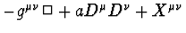

The demands of gauge field theories, quantum theory in external gauge and gravitational backgrounds, and quantum gravity have spurred intense study of the asymptotic heat kernel expansion for nonminimal differential operators of the type

on n-dimensional curved manifold and in the presence of a gauge field. The coefficients of this expansion depend on parameter a, dimension nand tensor invariants constructed of curvature tensor, gauge curvature, torsion and their derivates and derivatives. There are several computer programs for calculating the coefficients in an expansion of the heat kernel. When applied to the nonminimal operator these programs appeared to be able to compute no more than the second order coefficient.We report the first complete calculation of the fourth coefficient for nonminimal operator with the help of the essentially improved version of the program described in [1, 2]. The calculation has been carried out on PC and, for comparison, on supercomputer SPP-2000 too. We present here the full expressions for the coefficient in arbitrary dimension n and in the most important particular case n = 4.